Part III: Spatially-Aware Marker Gene Detection in Spatial Transcriptomics Data
Melody Jin
Walter and Eliza Hall InstituteThe University of Melbournejin.m@wehi.edu.au
2025-08-14
Source:vignettes/Differentially_expression_analysis.Rmd
Differentially_expression_analysis.RmdIntroduction
Spatial transcriptomics is a revolutionary technology that allows us
to measure gene expression while preserving the spatial context of cells
within tissues. Unlike traditional bulk or single-cell RNA sequencing,
spatial transcriptomics provides crucial information about where genes
are expressed in relation to tissue architecture, cell types, and
neighboring cells. This workshop demonstrates how to use the
jazzPanda package for spatially-aware marker gene detection
in spatial transcriptomics data.
What is jazzPanda?
jazzPanda is a specialized R package designed
specifically for spatial transcriptomics analysis. It addresses a key
limitation of traditional marker gene detection methods: they often
ignore the spatial organization of gene expression within tissues. By
incorporating spatial coordinates into the analysis, jazzPanda can
identify genes that not only differ between cell types but also exhibit
specific spatial patterns that may be biologically meaningful.
Key Features of jazzPanda
-
Spatial-aware analysis
jazzPanda’s core innovation is its ability to incorporate spatial coordinates directly into marker gene detection. Instead of just comparing gene expression between cell types, it analyzes how genes are spatially distributed relative to cell type clusters. This approach can reveal:- Genes that are enriched in specific spatial regions of a cell type
- Spatial gradients of gene expression within cell populations
- Genes that mark boundaries between different tissue regions
-
Multiple analytical approaches
jazzPanda provides two complementary methods for marker detection:- Correlation-based approach: Identifies genes whose spatial expression patterns correlate with cluster distributions using permutation testing for statistical significance.
- Linear modeling approach: Uses linear modelling to find genes that best predict cluster membership while accounting for spatial relationships.
-
Background correction
Spatial transcriptomics data often contains technical noise and artifacts. jazzPanda addresses this by:- Using negative control probes to model background noise
- Incorporating background correction into the statistical models
- Improving the specificity of marker detection by accounting for technical artifacts
-
Multi-sample support
Real biological studies often involve multiple samples or replicates. jazzPanda can:- Analyze multiple samples simultaneously
- Identify robust markers that are consistent across replicates
- Account for sample-specific spatial variations
- Provide more reliable marker gene identification
-
Flexible spatial binning
Different tissues and research questions require different spatial scales of analysis. jazzPanda supports:- Square binning for regular tissue regions
- Hexagonal binning for more natural cell arrangements
- Customizable bin sizes to match tissue characteristics
- Adaptive binning based on cell density
Workshop Overview
This comprehensive workshop will guide you through the complete jazzPanda workflow, from data preparation to result interpretation. We will:
- Load and preprocess spatial transcriptomics data - Learn how to prepare your data for jazzPanda analysis
- Perform spatial vector analysis - Understand how jazzPanda creates spatial representations of gene expression and cell types
- Detect marker genes using correlation-based methods - Use permutation testing to identify spatially correlated genes
- Detect marker genes using linear modeling accounting for background noise - Apply linear modeling while incorporating signal correction based on negative control probes to account for technical background.
- Compare results with traditional methods - See how spatial-aware analysis differs from standard differential expression
- Analyze multiple replicates - Learn to leverage multiple samples for robust marker detection
Data Description
This workshop uses spatial transcriptomics data from lung tissue samples (Lung5_Rep1 and Lung5_Rep3). The data has been preprocessed and subset to specific regions of interest to focus the analysis. The samples contain multiple cell types that have been clustered based on their gene expression profiles, and we’ll use jazzPanda to identify genes that exhibit spatial patterns correlated with these cell type clusters.
Important Note: This analysis uses only a subset of the full spatial transcriptomics dataset to demonstrate jazzPanda functionality. The results shown here are for educational purposes and demonstrate the potential of spatial transcriptomics analysis. For biological insights, the complete dataset should be analyzed with appropriate statistical power and biological validation.
# Set random seed for reproducibility
seed_number <- 899
set.seed(seed_number)
# Define consistent ggplot theme for spatial plots
defined_theme <- theme(
strip.text = element_text(size = rel(1)),
strip.background = element_rect(fill = NA, colour = "black"),
axis.line = element_blank(),
axis.text.x = element_blank(),
axis.text.y = element_blank(),
axis.ticks = element_blank(),
axis.title.x = element_blank(),
axis.title.y = element_blank(),
legend.position = "none",
panel.background = element_blank(),
panel.border = element_blank(),
panel.grid.major = element_blank(),
panel.grid.minor = element_blank(),
plot.background = element_blank()
)
# Function to automatically determine hex bin size based on data density
auto_hex_bin <- function(n, target_points_per_bin = 5) {
k <- n / target_points_per_bin
bins <- round(sqrt(k))
return(max(10, bins))
}Data Loading
For the workshop demonstration, we extracted selected spatial regions from the processed datasets provided in the previous workshop. Specifically, we selected a rectangular region from r1 spanning coordinates approximately between x = 10,000–20,000 and y = 155,000–165,000, and a region from r3 spanning x = –3,400–10,000 and y = –1,800–5,000.
In addition to the cells located within these regions, we also included the corresponding transcript data that fall within these spatial windows.
library(ExperimentHub)
library(SubcellularSpatialData)
eh <- ExperimentHub()
query(eh, 'SubcellularSpatialData')
tx_detections <- eh[['EH8232']]
all_data <- readRDS("all_tissue_PhiSpace.rds")
# cluster information
r1_all <- as.data.frame(cbind(spatialCoords(all_data$Lung5_Rep1),
cell_id = paste0("Lung5_Rep1_",all_data$Lung5_Rep1$cell_id),
sample = all_data$Lung5_Rep1$sample_id,
cluster = paste0("c", all_data$Lung5_Rep1$multiSampClust)))
r1_all$x <- as.numeric(r1_all$x)
r1_all$y <- as.numeric(r1_all$y)
r1_cells <- r1_all[r1_all$x>10000 & r1_all$x <20000 & r1_all$y > 155000& r1_all$y < 165000,]
r1_cells <- r1_cells[!duplicated(r1_cells$cell_id), ]
# transcript level information
sr_r1 <- tx_detections$x>10000 & tx_detections$x <20000 & tx_detections$y > 155000 & tx_detections$y < 165000
keep_cols <- c("gene", "genetype", "x", "y")
r1_tx <- tx_detections[tx_detections$sample_id == "Lung5_Rep1" & sr_r1, keep_cols ]
usethis::use_data(r1_tx, overwrite = TRUE)
r3_all = as.data.frame(cbind(spatialCoords(all_data$Lung5_Rep3),
cell_id = paste0("Lung5_Rep3_", all_data$Lung5_Rep3$cell_id),
sample = all_data$Lung5_Rep3$sample_id,
cluster = paste0("c", all_data$Lung5_Rep3$multiSampClust)))
r3_all$x = as.numeric(r3_all$x)
r3_all$y = as.numeric(r3_all$y)
r3_cells = r3_all[r3_all$x>-3400 & r3_all$x <10000 & r3_all$y > -1800 & r3_all$y < 5000,]
r3_cells <- r3_cells[!duplicated(r3_cells$cell_id), ]
sr_r3 = tx_detections$x>-3400 & tx_detections$x <10000 & tx_detections$y > -1800 & tx_detections$y < 5000
keep_cols = c("gene", "genetype", "x", "y")
r3_tx = tx_detections[tx_detections$sample_id == "Lung5_Rep3" &sr_r3, keep_cols ]
usethis::use_data(r3_tx, overwrite = TRUE)
r1_se <- readRDS("Lung5_Rep1.rds")
r3_se <- readRDS("Lung5_Rep3.rds")
# Subset the SpatialExperiment object to the selected region
r1_sub_se <- r1_se[, colnames(r1_se) %in% r1_cells$cell_id]
# Match cluster info from r1_cells
matched_clusters <- r1_cells$cluster[match(colnames(r1_sub_se), r1_cells$cell_id)]
# Add as a new column in colData
colData(r1_sub_se)$cluster <- matched_clusters
# c1 c2 c3 c4 c6 c7 c8 c9
# 773 33 858 1129 861 564 2395 267
colData(r1_sub_se) <- colData(r1_sub_se)[, c("sample_id", "cell_id","cluster")]
#saveRDS(r1_sub_se,"Lung5_Rep1_selected_cells.Rds")
usethis::use_data(r1_sub_se, overwrite = TRUE)
# Subset the SpatialExperiment object to the selected region
r3_sub_se <- r3_se[, colnames(r3_se) %in% r3_cells$cell_id]
# Match cluster info from r3_cells
matched_clusters <- r3_cells$cluster[match(colnames(r3_sub_se), r3_cells$cell_id)]
# Add as a new column in colData
colData(r3_sub_se)$cluster <- matched_clusters
colData(r3_sub_se) <- colData(r3_sub_se)[, c("sample_id", "cell_id","cluster")]
# c1 c2 c3 c4 c6 c7 c8 c9
# 773 33 858 1129 861 564 2395 267
#saveRDS(r3_sub_se,"Lung5_Rep3_selected_cells.Rds")
usethis::use_data(r3_sub_se, overwrite = TRUE)Data Components Explained
SpatialExperiment objects (r1_sub_se,
r3_sub_se)
- Contain the gene expression count matrix
- Include spatial coordinates for each cell
- Store cell metadata (cluster assignments, sample IDs)
- Provide methods for spatial analysis
Transcript-level data (r1_tx, r3_tx)
- Individual transcript detections with coordinates
- Used by jazzPanda for spatial vector creation
- Contains gene names and transcript types
- Essential for understanding spatial gene expression patterns
Cell information data frames (r1_cells,
r3_cells)
- Combine all cell metadata in a convenient format
- Used for visualization and analysis
- Include unique cell identifiers for tracking
- Ready for jazzPanda cluster information input
# Load data
data(r1_sub_se)
data(r3_sub_se)
data(r1_tx)
data(r3_tx)
# Create cell information data frames
r1_cells = as.data.frame(cbind(
spatialCoords(r1_sub_se),
cell_id = paste0("Lung5_Rep1_", r1_sub_se$cell_id),
sample = r1_sub_se$sample_id,
cluster = r1_sub_se$cluster
))
r1_cells$x = as.numeric(r1_cells$x)
r1_cells$y = as.numeric(r1_cells$y)
r3_cells = as.data.frame(cbind(
spatialCoords(r3_sub_se),
cell_id = paste0("Lung5_Rep3_", r3_sub_se$cell_id),
sample = r3_sub_se$sample_id,
cluster = r3_sub_se$cluster
))
r3_cells$x = as.numeric(r3_cells$x)
r3_cells$y = as.numeric(r3_cells$y)
# Lung5_Rep1
cat("**Lung5_Rep1 cell counts by cluster:**\n\n")## **Lung5_Rep1 cell counts by cluster:**
r1_tab <- table(r1_cells$cluster)
max_name_len <- max(nchar(names(r1_tab)))
for (i in seq_along(r1_tab)) {
cat(sprintf(" - %-*s : %d\n", max_name_len, names(r1_tab)[i], r1_tab[i]))
}## - c1 : 773
## - c2 : 33
## - c3 : 858
## - c4 : 1129
## - c6 : 861
## - c7 : 564
## - c8 : 2395
## - c9 : 267
cat("\n**Lung5_Rep3 cell counts by cluster:**\n\n")##
## **Lung5_Rep3 cell counts by cluster:**
r3_tab <- table(r3_cells$cluster)
max_name_len <- max(nchar(names(r3_tab)))
for (i in seq_along(r3_tab)) {
cat(sprintf(" - %-*s : %d\n", max_name_len, names(r3_tab)[i], r3_tab[i]))
}## - c1 : 924
## - c2 : 32
## - c3 : 813
## - c4 : 700
## - c6 : 813
## - c7 : 530
## - c8 : 1688
## - c9 : 118
# === Spatial Coverage Summary ===
r1_x <- round(range(r1_cells$x), 1)
r1_y <- round(range(r1_cells$y), 1)
r3_x <- round(range(r3_cells$x), 1)
r3_y <- round(range(r3_cells$y), 1)
cat("\n\n### Spatial Coverage Summary\n\n",
"Sample | X Range | Y Range\n",
"-------------|--------------------|-------------------\n",
sprintf("Lung5_Rep1 | %7.1f – %-7.1f | %7.1f – %-7.1f\n", r1_x[1], r1_x[2], r1_y[1], r1_y[2]),
sprintf("Lung5_Rep3 | %7.1f – %-7.1f | %7.1f – %-7.1f\n", r3_x[1], r3_x[2], r3_y[1], r3_y[2]))##
##
## ### Spatial Coverage Summary
##
## Sample | X Range | Y Range
## -------------|--------------------|-------------------
## Lung5_Rep1 | 10000.5 – 19997.4 | 155232.6 – 164999.5
## Lung5_Rep3 | -3393.8 – 9995.9 | -1797.9 – 4999.9Visualize Spatial Distribution of Clusters
Understanding the spatial organization of cell type clusters is essential before marker gene detection. This visualization reveals tissue architecture, identifies spatial patterns, validates cluster assignments, and guides interpretation of subsequent analyses. The spatial arrangement of cell types reflects functional relationships, tissue boundaries, microenvironmental niches, and disease states, all of which influence marker gene patterns.
# Spatial distribution plot
ggplot(data = r1_cells, aes(x = x, y = y, colour = cluster)) +
geom_point(size = 0.5) +
scale_colour_brewer(palette = "Dark2") +
facet_wrap(~cluster, ncol = 3, scales = "free") +
theme_classic() +
theme(legend.position = "none") +
labs(title = "Spatial Distribution of Clusters - Lung5_Rep1 subset",
x = "X coordinate", y = "Y coordinate") +
theme(axis.text = element_text(size = 8),
strip.text = element_text(size = 10, face = "bold"),
plot.title = element_text(size = 14, face = "bold"),
plot.subtitle = element_text(size = 10))Spatial Vector Analysis with jazzPanda
Understanding jazzPanda’s Core Concept
jazzPanda works by converting spatial transcriptomics data into spatial vectors - mathematical representations that capture how genes and cell types are distributed across tissue space. This is fundamentally different from traditional differential expression analysis, which ignores spatial information.
What are Spatial Vectors?
Spatial vectors are created by:
- Dividing tissue into spatial bins (like pixels in an image)
- Counting transcripts per bin for each gene
- Counting cells per bin for each cluster
- Creating correlation matrices between gene and cluster spatial patterns
This approach allows jazzPanda to identify genes whose spatial expression patterns correlate with the spatial distribution of specific cell types.
Generate Spatial Vectors
This section creates the fundamental data structure that jazzPanda uses for spatial-aware marker gene detection. Spatial vectors convert continuous spatial coordinates into discrete bins, allowing correlation analysis between gene expression patterns and cell type distributions.
KEY CONCEPTS:
- Spatial binning: Divides tissue into regular grid cells (like pixels)
- Gene vectors: Count of transcripts per bin for each gene
- Cluster vectors: Count of cells per bin for each cluster
- Correlation analysis: Measures spatial relationship between genes and clusters
# ============================================================================
# SPATIAL VECTOR GENERATION - CORE JAZZPANDA FUNCTIONALITY
# ============================================================================
# Define binning parameters
# - More bins (100x100): Higher spatial resolution, more noise, longer computation
# - Fewer bins (10x10): Lower resolution, more stable patterns, faster computation
grid_length <- 20 # Size of spatial bins (20x20 pixels)
# We only analyze actual genes, not control probes
genes <- unique(r1_tx[r1_tx$genetype == "Gene", "gene"])
r1_tx$feature_name <- r1_tx$gene
# Extract negative control probe names for background correction
# These will be used later to model technical noise and improve specificity
nc_names <- unique(r1_tx[r1_tx$genetype == "NegPrb", "gene"])
cat(
"Data preparation summary:\n",
"Number of genes to analyze:", length(genes), "\n",
"Number of negative control probes:", length(nc_names), "\n",
"Spatial bin size:", grid_length, "x", grid_length, "pixels\n"
)## Data preparation summary:
## Number of genes to analyze: 960
## Number of negative control probes: 20
## Spatial bin size: 20 x 20 pixels
# Generate spatial vectors for genes and clusters
# This is the core jazzPanda function that performs spatial binning:
# 1. Divides tissue into 20x20 square bins
# 2. Counts transcripts per bin for each gene
# 3. Counts cells per bin for each cluster
r1_sv <- get_vectors(
x = list("Lung5_Rep1" = r1_tx),
sample_names = "Lung5_Rep1",
cluster_info = r1_cells,
bin_type = "square", # Square bins for regular tissue regions
bin_param = c(grid_length, grid_length), # 20x20 pixel bins
test_genes = genes # Only analyze actual genes
)
# Generate spatial vectors for genes (from transcripts) and clusters
# use the cell location and count matrix to create gene vectors
# This is useful when: Transcript coordinate data is not available
# IMPORTANT: For perfect alignment, always take both `cluster_mt` and `gene_mt`
# from the SAME `get_vectors()` call so they share the exact window/tiles and
# bin ordering.
# r1_sv_cm <- get_vectors(
# x = r1_sub_se,
# sample_names = "Lung5_Rep1",
# cluster_info = r1_cells,
# bin_type = "square", # Square bins for regular tissue regions
# bin_param = c(grid_length, grid_length), # 20x20 pixel bins
# test_genes = genes, # Only analyze actual genes
# use_cm=TRUE # # Use cell count matrix instead of transcript coordinates
# )
# ============================================================================
# INTERPRETATION OF SPATIAL VECTOR DIMENSIONS
# ============================================================================
cat("\n=== SPATIAL VECTOR DIMENSIONS ===\n",
"Gene matrix:", dim(r1_sv$gene_mt), "\n",
"Cluster matrix:", dim(r1_sv$cluster_mt), "\n") # Clusters x spatial bins##
## === SPATIAL VECTOR DIMENSIONS ===
## Gene matrix: 400 960
## Cluster matrix: 400 8
# What these dimensions mean:
# - Gene matrix: Each column = one gene, each row = one spatial tile
# - Cluster matrix: Each column = one cluster, each row = one spatial tile
cat("\n=== SPATIAL BINNING SUMMARY ===\n",
"Total spatial tile created:", nrow(r1_sv$gene_mt), "\n",
"Average transcripts per tile:", round(mean(colMeans(r1_sv$gene_mt)), 1),"\n",
"Average cells per tile:", round(mean(colMeans(r1_sv$cluster_mt)), 1), "\n")##
## === SPATIAL BINNING SUMMARY ===
## Total spatial tile created: 400
## Average transcripts per tile: 19.2
## Average cells per tile: 2.1Cluster-Cluster Correlation Analysis
To better understand how different cell clusters are organized within the tissue, we compute the spatial correlation between their binned abundance profiles. This highlights whether specific clusters tend to co-localize or occupy distinct spatial niches. A high positive correlation suggests that two clusters frequently appear in the same spatial regions, possibly indicating shared biological roles or transitional cell states. Conversely, a strong negative correlation may reflect spatial separation or compartmentalization.
If many clusters exhibit consistently high positive correlations, this may indicate that the data has been overclustered—i.e., multiple clusters are capturing the same underlying cell population. In such cases, it may be helpful to revisit the clustering resolution.
# ============================================================================
# CLUSTER-CLUSTER SPATIAL CORRELATION ANALYSIS
# ============================================================================
# Define cluster order for consistent visualization
cluster_names <- paste0("c", c(1, 2, 3, 4, 6, 7, 8, 9))
r1_sv$cluster_mt <- r1_sv$cluster_mt[, cluster_names]
# Calculate pairwise correlations between clusters
# This measures how similar the spatial distribution patterns are between clusters
cor_cluster_mt <- cor(r1_sv$cluster_mt, r1_sv$cluster_mt, method = "pearson")
# Create color palette for correlation heatmap
# Blue = negative correlation, Red = positive correlation, White = no correlation
col <- grDevices::colorRampPalette(c("#4477AA", "#77AADD",
"#FFFFFF", "#EE9988", "#BB4444"))
# Plot correlation heatmap
corrplot::corrplot(
cor_cluster_mt,
method = "color",
col = col(200),
diag = TRUE,
addCoef.col = "black",
type = "upper",
tl.col = "black",
tl.srt = 0,
mar = c(2, 2, 2, 2) ,
number.cex = 0.4,
tl.cex = 0.6,
cex.main = 0.6,
cl.cex=0.5,
sig.level = 0.05,
insig = "blank",
title = "Cluster-Cluster Spatial Correlation"
)The spatial correlation heatmap reveals how clusters co-localize or segregate across the tissue. Notably, clusters c3 and c4 show a moderate positive correlation (r = 0.39), suggesting they tend to occupy overlapping spatial regions. This is consistent with the spatial plots, where both clusters are enriched along the upper and right edges of the section—potentially reflecting functionally related or spatially adjacent cell types. In contrast, clusters c8 and c4 (r = -0.30) and c8 and c3 (r = -0.27) display negative correlations, indicating mutually exclusive spatial patterns. This is visually supported by the spatial map, where c8 forms a dense central structure, while c3 and c4 are more peripherally distributed. Other cluster pairs, such as c1 and c8 or c6 and c8, also show weak negative correlations, reflecting spatial separation.
Overall, the correlation structure suggests that most clusters occupy distinct spatial domains, with only a few showing significant overlap. This supports the current clustering resolution as appropriate—there is no strong evidence of overclustering, which would typically manifest as widespread high correlations between clusters. Instead, the results point to a meaningful spatial partitioning of cell types, which can now be further interpreted in the context of tissue architecture or marker gene expression.
Cluster-Gene Correlation Analysis
This analysis examines the spatial correlation between gene expression patterns and cluster distributions.
# ============================================================================
# CLUSTER-GENE SPATIAL CORRELATION ANALYSIS
# ============================================================================
#
# This analysis identifies genes whose spatial expression patterns correlate
# with the spatial distribution of specific cell type clusters. This is the
# foundation of jazzPanda's spatial-aware marker gene detection.
#
# KEY INSIGHTS:
# - High positive correlation: Gene is enriched in regions where cluster is abundant
# - High negative correlation: Gene is depleted in regions where cluster is abundant
# - Low correlation: Gene expression is independent of cluster distribution
#
# ============================================================================
# Calculate correlations between clusters and selected genes
# Each value represents the spatial correlation between a cluster and a gene
selected_genes <- c("IL7R", "COL4A2","GPNMB", "CXCL8", "FN1", "TPM2",
"TM4SF1", "IGHG2", "CXCL10","MMP12")
cor_gc_mt <- cor(r1_sv$cluster_mt, r1_sv$gene_mt[,selected_genes],
method = "pearson")
# Set outer and inner margins to keep things compact but clean
# par(mar = c(1, 1, 3, 1)) # Bottom, Left, Top, Right
corrplot::corrplot(
cor_gc_mt,
method = "color",
col = col(200),
diag = TRUE,
addCoef.col = "black",
type = "upper",
tl.col = "black",
tl.srt = 45,
mar = c(3,3,3,3),
number.cex = 0.4,
tl.cex = 0.5,
cl.cex=0.3,
sig.level = 0.05,
insig = "blank",
title = "Cluster-Gene Spatial Correlation",
cex.main = 0.7
)Marker Gene Detection Methods
Method 1: Correlation-Based Approach
The correlation-based approach identifies genes whose spatial expression patterns correlate significantly with cluster distributions. We can use permutation testing to assess statistical significance.
Perform Permutation Testing
# ============================================================================
# PERMUTATION TESTING FOR SPATIAL CORRELATION SIGNIFICANCE
# ============================================================================
# Set seed for reproducible results
set.seed(seed_number)
cat("Starting permutation testing...\n",
"Number of permutations:", 1000, "\n",
"Number of genes tested:", length(genes), "\n",
"Number of clusters:", length(cluster_names), "\n")## Starting permutation testing...
## Number of permutations: 1000
## Number of genes tested: 960
## Number of clusters: 8
# Perform permutation testing for correlation-based marker detection
# This is computationally intensive but provides robust statistical significance
perm_p <- compute_permp(
x = list("Lung5_Rep1" = r1_tx),
cluster_info = r1_cells,
perm.size = 1000, # Number of permutations (more = more robust but slower)
bin_type = "square",
bin_param = c(grid_length, grid_length),
test_genes = genes,
correlation_method = "pearson",
n_cores = 1, # Increase for faster computation on multi-core systems
correction_method = "BH" # Benjamini-Hochberg correction for multiple testing
)
# Extract results
obs_corr <- get_cor(perm_p) # Observed correlations
perm_res <- get_perm_p(perm_p) # Permutation-adjusted p-values
sig_counts <- colSums(perm_res < 0.05, na.rm = TRUE)
cat("Permutation testing completed.\n",
"Number of significant gene-cluster pairs (FDR < 0.05):\n")## Permutation testing completed.
## Number of significant gene-cluster pairs (FDR < 0.05):## c1: 142
## c2: 235
## c3: 23
## c4: 4
## c6: 73
## c7: 147
## c8: 428
## c9: 24Examine Results
This section analyzes the results of permutation testing to identify the most promising spatial marker genes. We examine both correlation strength and statistical significance to find genes with robust spatial patterns.
# ============================================================================
# EXAMINATION OF PERMUTATION TESTING RESULTS
# ============================================================================
# CRITERIA FOR TOP MARKERS:
# 1. High absolute correlation (|r| > 0.7)
# 2. Statistical significance (FDR < 0.05)
# ============================================================================
# Display top correlations (regardless of significance)
cat("=== TOP 10 HIGHEST CORRELATIONS ===\n")## === TOP 10 HIGHEST CORRELATIONS ===
top_cor_genes <- obs_corr[order(apply(abs(obs_corr), 1, max), decreasing = TRUE), ]
print(head(top_cor_genes, 10))## c6 c1 c9 c8 c3 c4
## TM4SF1 -0.2432548 -0.2336321 -0.1766833 0.9034871 -0.2773497 -0.3031047
## EPCAM -0.2296324 -0.2448973 -0.1736810 0.8975413 -0.2724329 -0.2970755
## SOX9 -0.2365242 -0.2430123 -0.1772934 0.8956744 -0.2965354 -0.3064993
## ITGA3 -0.1902673 -0.2180898 -0.1548862 0.8926416 -0.2685670 -0.2891194
## CDH1 -0.2397114 -0.2222582 -0.1684981 0.8920764 -0.2706071 -0.2955870
## ANXA2 -0.2112035 -0.2207079 -0.1741656 0.8807889 -0.2708132 -0.3003662
## ERBB3 -0.2169592 -0.2176163 -0.1603566 0.8797060 -0.2748823 -0.3003702
## KRT19 -0.2653662 -0.2505629 -0.1842400 0.8768583 -0.2967594 -0.3179596
## DDR1 -0.2065897 -0.2201620 -0.1613842 0.8766686 -0.2814231 -0.3087055
## RAC1 -0.1515776 -0.1501326 -0.1504121 0.8757741 -0.2405148 -0.2711468
## c7 c2
## TM4SF1 0.2114204 0.06374892
## EPCAM 0.2953843 0.09852599
## SOX9 0.2318317 0.08008944
## ITGA3 0.2609914 0.11630001
## CDH1 0.2132824 0.09143473
## ANXA2 0.2606081 0.10041457
## ERBB3 0.2594336 0.09588257
## KRT19 0.1826650 0.05166671
## DDR1 0.3028729 0.10237260
## RAC1 0.2530473 0.11553943
# Display significant results (regardless of correlation strength)
cat("\n=== TOP 10 MOST SIGNIFICANT RESULTS ===\n")##
## === TOP 10 MOST SIGNIFICANT RESULTS ===
min_pvals <- apply(perm_res, 1, min, na.rm = TRUE)
top_sig <- names(sort(min_pvals)[1:10])
print(perm_res[top_sig, ])## c6 c1 c9 c8 c3 c4 c7
## CCL19 0.692307692 0.000999001 0.815184815 1.000000000 1 1 1.000000000
## IGHG2 0.000999001 0.000999001 0.000999001 1.000000000 1 1 0.996003996
## IER3 1.000000000 1.000000000 1.000000000 0.000999001 1 1 0.004995005
## CD276 1.000000000 1.000000000 1.000000000 0.000999001 1 1 0.000999001
## SAA1 1.000000000 1.000000000 1.000000000 0.000999001 1 1 0.989010989
## TYK2 1.000000000 1.000000000 1.000000000 0.000999001 1 1 0.575424575
## CSF2RA 1.000000000 0.000999001 1.000000000 1.000000000 1 1 1.000000000
## MIF 1.000000000 1.000000000 1.000000000 0.000999001 1 1 0.049950050
## COL9A1 1.000000000 1.000000000 1.000000000 0.000999001 1 1 0.529470529
## CCR7 0.997002997 0.000999001 1.000000000 1.000000000 1 1 1.000000000
## c2
## CCL19 0.814185814
## IGHG2 0.645354645
## IER3 0.262737263
## CD276 0.002997003
## SAA1 0.344655345
## TYK2 0.249750250
## CSF2RA 0.337662338
## MIF 0.142857143
## COL9A1 0.110889111
## CCR7 0.667332667
top_genes_per_cluster <- lapply(colnames(perm_res), function(cluster) {
pvals <- perm_res[, cluster]
corrs <- obs_corr[, cluster]
# Combine and sort
df <- data.frame(
gene = rownames(perm_res),
pval = pvals,
corr = corrs
)
df <- df[!is.na(df$pval), ] # remove NA
df <- df[order(df$pval, -abs(df$corr)), ] # first by pval, then by abs(corr)
head(df$gene, 10)
})
names(top_genes_per_cluster) <- colnames(perm_res)
top_genes_all <- unique(unlist(top_genes_per_cluster))
heatmap_matrix <- obs_corr[top_genes_all, ]
heatmap_matrix <- heatmap_matrix[, cluster_names, drop = FALSE]
pheatmap(
heatmap_matrix,
cluster_rows = TRUE,
cluster_cols = TRUE,
color = colorRampPalette(c("blue", "white", "red"))(100),
main = "Top 10 Spatially Correlated Genes per Cluster"
)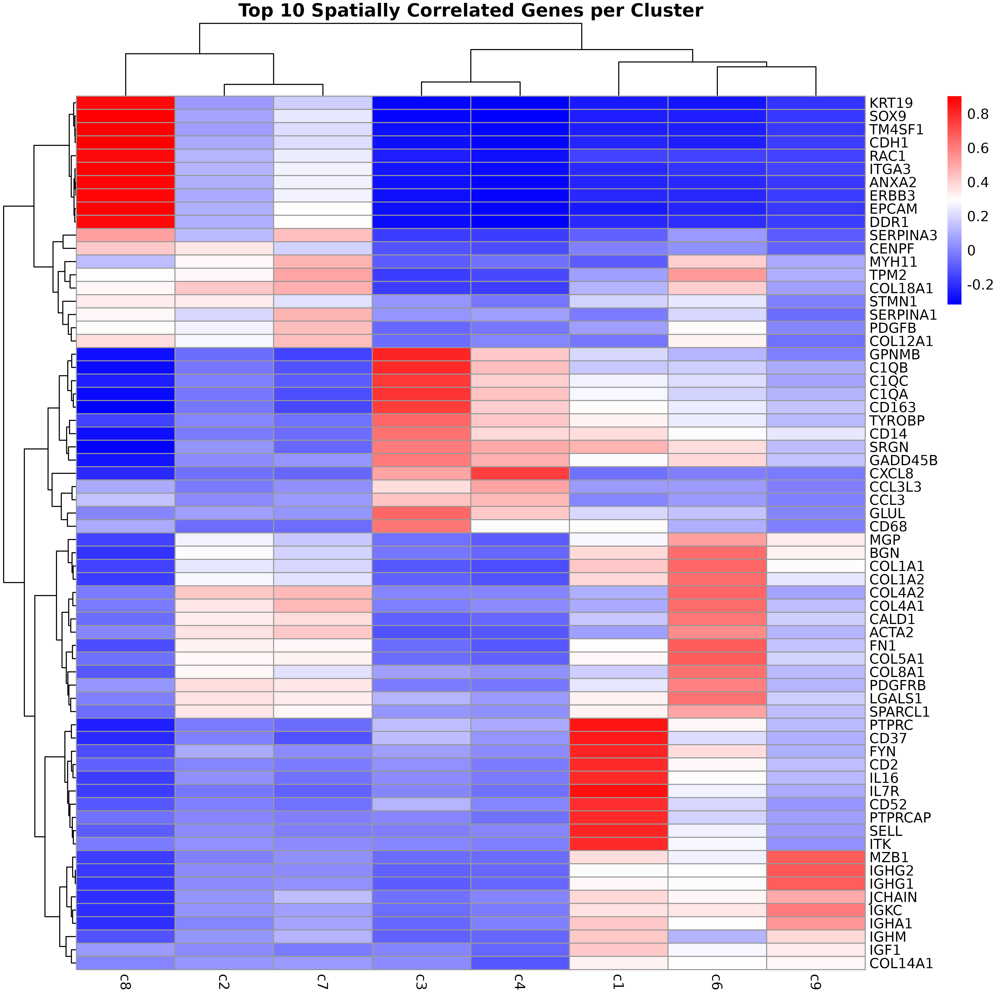
# ============================================================================
# INTEGRATED ANALYSIS: HIGH CORRELATION + SIGNIFICANCE
# ============================================================================
# Find genes that are both highly correlated and statistically significant
high_cor_threshold <- 0.7
sig_threshold <- 0.05
# For each cluster, find top markers
for (cl in colnames(perm_res)) {
cat("\n--- Top markers for cluster", cl, "---\n")
# Get correlations and p-values for this cluster
cl_cors <- obs_corr[, cl]
cl_pvals <- perm_res[, cl]
# Find genes meeting both criteria
high_cor_sig <- which(abs(cl_cors) > high_cor_threshold & cl_pvals < sig_threshold)
if (length(high_cor_sig) > 0) {
# Sort by absolute correlation
top_markers <- high_cor_sig[order(abs(cl_cors[high_cor_sig]), decreasing = TRUE)]
cat("Genes with |r| >", high_cor_threshold, "and FDR <", sig_threshold, ":\n")
for (i in 1:min(5, length(top_markers))) {
gene <- names(top_markers[i])
cor_val <- cl_cors[gene]
p_val <- cl_pvals[gene]
cat(" ", gene, ": r =", round(cor_val, 3), ", FDR =", round(p_val, 4), "\n")
}
} else {
cat("No genes meet both criteria. Relaxing thresholds...\n")
# Relaxed criteria
relaxed_cor <- 0.5
relaxed_sig <- 0.05
relaxed_markers <- which(abs(cl_cors) > relaxed_cor & cl_pvals < relaxed_sig)
if (length(relaxed_markers) > 0) {
top_relaxed <- relaxed_markers[order(abs(cl_cors[relaxed_markers]), decreasing = TRUE)]
cat("Genes with |r| >", relaxed_cor, "and FDR <", relaxed_sig, ":\n")
for (i in 1:min(3, length(top_relaxed))) {
gene <- names(top_relaxed[i])
cor_val <- cl_cors[gene]
p_val <- cl_pvals[gene]
cat(" ", gene, ": r =", round(cor_val, 3), ", FDR =", round(p_val, 4), "\n")
}
} else {
cat("No significant markers found even with relaxed criteria.\n")
}
}
}##
## --- Top markers for cluster c6 ---
## No genes meet both criteria. Relaxing thresholds...
## Genes with |r| > 0.5 and FDR < 0.05 :
## FN1 : r = 0.677 , FDR = 0.001
## COL5A1 : r = 0.673 , FDR = 0.001
## COL1A1 : r = 0.649 , FDR = 0.001
##
## --- Top markers for cluster c1 ---
## Genes with |r| > 0.7 and FDR < 0.05 :
## IL7R : r = 0.866 , FDR = 0.001
## PTPRC : r = 0.85 , FDR = 0.001
## CD37 : r = 0.835 , FDR = 0.001
## FYN : r = 0.815 , FDR = 0.001
## SELL : r = 0.812 , FDR = 0.001
##
## --- Top markers for cluster c9 ---
## No genes meet both criteria. Relaxing thresholds...
## Genes with |r| > 0.5 and FDR < 0.05 :
## IGHG2 : r = 0.693 , FDR = 0.001
## IGHG1 : r = 0.683 , FDR = 0.001
## MZB1 : r = 0.674 , FDR = 0.001
##
## --- Top markers for cluster c8 ---
## Genes with |r| > 0.7 and FDR < 0.05 :
## TM4SF1 : r = 0.903 , FDR = 0.001
## EPCAM : r = 0.898 , FDR = 0.001
## SOX9 : r = 0.896 , FDR = 0.001
## ITGA3 : r = 0.893 , FDR = 0.001
## CDH1 : r = 0.892 , FDR = 0.001
##
## --- Top markers for cluster c3 ---
## Genes with |r| > 0.7 and FDR < 0.05 :
## GPNMB : r = 0.809 , FDR = 0.001
## C1QB : r = 0.796 , FDR = 0.001
## C1QA : r = 0.772 , FDR = 0.001
## C1QC : r = 0.759 , FDR = 0.001
## CD163 : r = 0.754 , FDR = 0.001
##
## --- Top markers for cluster c4 ---
## Genes with |r| > 0.7 and FDR < 0.05 :
## CXCL8 : r = 0.753 , FDR = 0.001
##
## --- Top markers for cluster c7 ---
## No genes meet both criteria. Relaxing thresholds...
## Genes with |r| > 0.5 and FDR < 0.05 :
## TPM2 : r = 0.509 , FDR = 0.001
##
## --- Top markers for cluster c2 ---
## No genes meet both criteria. Relaxing thresholds...
## No significant markers found even with relaxed criteria.Cluster c1 shows strong expression of classic lymphoid markers such as IL7R, PTPRC, and SELL, suggesting a robust presence of T cells, likely involved in immune surveillance or infiltration. Cluster c2 lacks clear spatially enriched markers, which may reflect a heterogeneous or transitional cell population, possibly at the interface of tumor and stroma. Cluster c3 is enriched for genes like CD163 and C1QA/B/C, indicating a population of tumor-associated macrophages, potentially contributing to immunosuppressive or tissue-remodeling functions.
Cluster c4 is characterized by high spatial correlation with CXCL8, a pro-inflammatory chemokine, hinting at an inflammatory microenvironment that could influence tumor progression or immune cell recruitment. In cluster c5, although markers weren’t explicitly listed, its position in the annotation likely overlaps with the macrophage-rich c3 cluster or represents a related myeloid subtype. Cluster c6 expresses high levels of FN1 and collagens (COL1A1, COL5A1), pointing to a fibroblast-like or CAF population involved in ECM remodeling and structural support. Cluster c7, marked by TPM2, may correspond to contractile stromal cells, such as smooth muscle-like or mesenchymal cells, possibly engaged in mechanical remodeling of the tumor niche.
Cluster c8 shows a strong epithelial gene signature with markers like EPCAM, CDH1, and SOX9, consistent with differentiated tumor cells, potentially with stem-like features. Finally, cluster c9 stands out with high expression of immunoglobulin genes (IGHG1, IGHG2) and MZB1, indicative of plasma cells or plasmablasts, suggesting local antibody production and humoral immune activity. Together, these clusters reflect a spatially organized and biologically diverse landscape of tumor, immune, and stromal elements, underscoring the complex cellular interactions within the cancer microenvironment.
Visualize Top Marker Genes
This section creates spatial plots showing the expression patterns of the top marker genes identified by correaltion approach.
# ============================================================================
# SPATIAL VISUALIZATION OF TOP MARKER GENES
# ============================================================================
# - Left panel: Spatial distribution of the target cluster
# - Right panels: Spatial expression patterns of top marker genes
# - Color intensity: Transcript density (darker = more transcripts)
# - Hexagonal bins: Smooth spatial representation of expression
# ============================================================================
permp_df <- as.data.frame(perm_p$perm.pval.adj)
permp_df$gene <- row.names(permp_df)
# Visualize top marker genes for each cluster
for (cl in cluster_names) {
# Get significant genes for this cluster
perm_sig <- permp_df[permp_df[, cl] < 0.05, ]
# Define correlation cutoff (75th percentile)
# obs_cutoff <- quantile(obs_corr[, cl], 0.75)
# cat("Correlation cutoff (75th percentile):", round(obs_cutoff, 3), "\n")
obs_cutoff <-0.5
# Find genes that are both significant and have high correlation
perm_cl <- intersect(
row.names(perm_res[perm_res[, cl] < 0.05, ]),
row.names(obs_corr[obs_corr[, cl] > obs_cutoff, ])
)
if (length(perm_cl) > 0) {
# Get top 3 genes by correlation value
rounded_val <- signif(as.numeric(obs_corr[perm_cl, cl]), digits = 3)
inters_df <- as.data.frame(cbind(gene = perm_cl, value = rounded_val))
inters_df$value <- as.numeric(inters_df$value)
inters_df <- inters_df[order(inters_df$value, decreasing = TRUE), ]
inters_df <- inters_df[1:min(nrow(inters_df), 3), ]
inters_df$text <- paste(inters_df$gene, inters_df$value, sep = ": ")
# Prepare data for visualization
curr_genes <- r1_tx$feature_name %in% inters_df$gene
data_vis <- r1_tx[curr_genes, c("x", "y", "feature_name")]
data_vis$text <- inters_df[match(data_vis$feature_name, inters_df$gene), "text"]
data_vis$text <- factor(data_vis$text, levels = inters_df$text)
# Create hex bin plot for gene expression
gene_pt <- ggplot(data = data_vis, aes(x = x, y = y)) +
geom_hex(bins = auto_hex_bin(nrow(data_vis))) +
facet_wrap(~text) +
scale_y_reverse() +
scale_fill_viridis_c(option = "plasma", trans = "sqrt", direction = -1) +
guides(fill = guide_colorbar(height = grid::unit(5, "cm"))) +
defined_theme +
theme(legend.position = "right", legend.title = element_blank()) +
labs(title = paste("Top marker genes for cluster", cl))
# Create cluster plot
cl_pt <- ggplot(data = r1_cells[r1_cells$cluster == cl, ],
aes(x = x, y = y, color = cluster)) +
geom_point(size = 0.2) +
facet_wrap(~cluster) +
scale_y_reverse() +
scale_color_manual(values = "black") +
defined_theme +
labs(title = paste("Cluster", cl, "spatial distribution"))
# Add empty panels if fewer than 3 features to keep layout consistent
if (length(perm_cl) == 2) {
gene_pt <- (gene_pt | plot_spacer()) +
plot_layout(widths = c(2, 1))
} else if (length(perm_cl) == 1) {
gene_pt <- (gene_pt | plot_spacer() | plot_spacer()) +
plot_layout(widths = c(1, 1, 1))
}
lyt <- wrap_plots(cl_pt, ncol = 1) | gene_pt
layout_design <- lyt + patchwork::plot_layout(widths = c(1, 3))
print(layout_design)
}
}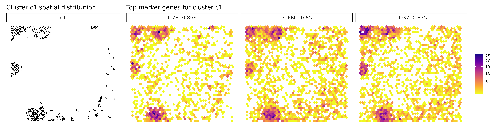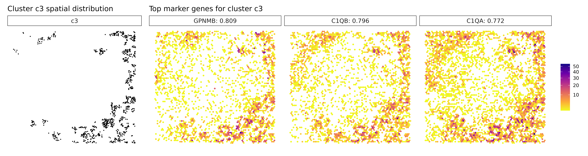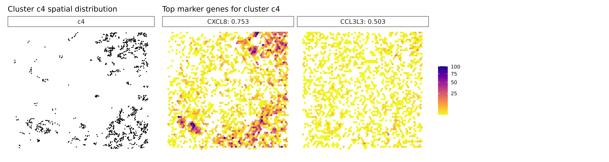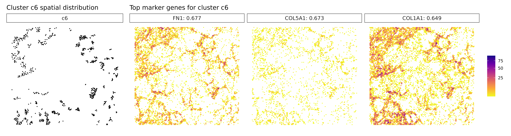
Method 2: Linear Modeling Approach with Background Correction
The linear modeling approach uses Linear modelling to identify genes that best predict cluster membership while accounting for background noise using negative control probes.
Prepare Background Data
# Extract negative control probe data
r1_nc_tx = r1_tx[r1_tx$gene %in% nc_names, ]
# Visualize spatial distribution of negative control probes
ggplot(data = r1_nc_tx, aes(x = x, y = y)) +
geom_point(size = 0.2) +
facet_wrap(~feature_name, ncol = 5) +
scale_y_reverse() +
theme_classic() +
defined_theme +
labs(title = "Spatial Distribution of Negative Control Probes")Note: Negative control probes should show random spatial distribution. If they show spatial patterns, this may indicate technical artifacts that need to be addressed.
Create Background Vectors
# Create spatial vectors for negative control probes
r1_nc_vectors <- create_genesets(
x = list("Lung5_Rep1" = r1_nc_tx),
sample_names = "Lung5_Rep1",
name_lst = list(probe = nc_names),
bin_type = "square",
bin_param = c(grid_length, grid_length),
cluster_info = NULL
)
cat("Background vectors created with", length(nc_names), "negative control probes\n",
dim(r1_nc_vectors))## Background vectors created with 20 negative control probes
## 400 1Perform Linear Modelling
The linear modelling approach used here leverages LASSO-regularized generalized linear models to identify spatially enriched marker genes across tissue clusters. This framework supports multi-sample designs and can incorporate background correction to account for spatial patterns unrelated to cell identity.
# ============================================================================
# Linear modelling FOR SPATIAL MARKER GENE DETECTION
# ============================================================================
# Set seed for reproducible results
set.seed(seed_number)
cat(" Number of genes:", ncol(r1_sv$gene_mt), "\n",
"Number of clusters:", ncol(r1_sv$cluster_mt), "\n",
"Number of spatial bins:", nrow(r1_sv$gene_mt), "\n",
"Background correction:", ifelse(!is.null(r1_nc_vectors),
"Enabled", "Disabled"), "\n")## Number of genes: 960
## Number of clusters: 8
## Number of spatial bins: 400
## Background correction: Enabled
# Perform linear model-based marker detection with background correction
r1_lasso_lst <- lasso_markers(
gene_mt = r1_sv$gene_mt,
cluster_mt = r1_sv$cluster_mt,
sample_names = c("Lung5_Rep1"),
keep_positive = TRUE, # Only keep positive coefficients (enrichment)
background = r1_nc_vectors # Include background correction
)Examine Results
# Top result table
# coef_cutoff = 0.2: Only keep genes with coefficient > 0.2
# This threshold can be adjusted based on your needs
r1_top <- get_top_mg(r1_lasso_lst, coef_cutoff = 0.1)
# Full result table
r1_full <- get_full_mg(r1_lasso_lst)
# Display top results
head(r1_top[r1_top$top_cluster=="c8", ],10)## gene top_cluster glm_coef pearson max_gg_corr max_gc_corr
## IER3 IER3 c8 6.733976 0.8583509 0.9335838 0.8583509
## EPHA2 EPHA2 c8 2.897154 0.8266734 0.9497721 0.8266734
## PSCA PSCA c8 1.224767 0.7427378 0.8208293 0.7427378
## OLFM4 OLFM4 c8 28.657324 0.7807027 0.9018884 0.7807027
## COL17A1 COL17A1 c8 1.932054 0.8622820 0.9581119 0.8622820
## TNFRSF21 TNFRSF21 c8 1.355927 0.8560354 0.9446167 0.8560354
## MMP1 MMP1 c8 6.186444 0.7098731 0.8683411 0.7098731
## S100A6 S100A6 c8 35.709773 0.8628552 0.9831570 0.8628552
## CDH1 CDH1 c8 2.815443 0.8920764 0.9714558 0.8920764
## ITGB6 ITGB6 c8 3.070686 0.8091457 0.9241652 0.8091457
# Display full results
r1_full[r1_full$gene=="EPCAM", ]## gene cluster glm_coef p_value pearson max_gg_corr max_gc_corr
## 815 EPCAM c8 4.604450 3.494246e-52 0.8975413 0.9714558 0.8975413
## 816 EPCAM probe 1.280278 9.073677e-47 0.7072324 0.9714558 0.8975413
r1_full[r1_full$gene=="MZB1", ]## gene cluster glm_coef p_value pearson max_gg_corr max_gc_corr
## 1719 MZB1 c9 3.3399992 1.413055e-61 0.6738645 0.875899 0.6738645
## 1720 MZB1 c1 0.6946244 1.180244e-17 0.3735805 0.875899 0.6738645
## 1721 MZB1 probe 0.1177224 5.472379e-08 0.2375085 0.875899 0.6738645
## 1722 MZB1 c6 0.3682316 6.766650e-04 0.2657707 0.875899 0.6738645
for (cl in cluster_names) {
# Subset to top genes for this cluster
cluster_genes <- r1_top[r1_top$top_cluster == cl, ]
if (nrow(cluster_genes) == 0) {
cat("\n=== Cluster:", cl, "===\n",
" No marker genes found.\n")
next
}
# Ensure numeric types
cluster_genes$glm_coef <- as.numeric(cluster_genes$glm_coef)
cluster_genes$pearson <- as.numeric(cluster_genes$pearson)
# Sort by glm_coef
cluster_genes <- cluster_genes[order(cluster_genes$glm_coef, decreasing = TRUE), ]
# Take top 3 genes
top_genes <- head(cluster_genes, 3)
# Print nicely formatted output
cat("\n=== Cluster:", cl, "===\n")
for (i in 1:nrow(top_genes)) {
gene <- top_genes$gene[i]
coef <- signif(top_genes$glm_coef[i], 3)
corr <- signif(top_genes$pearson[i], 3)
cat(sprintf(" %d. %-10s | glm_coef: %-6s | corr: %-6s\n", i, gene, coef, corr))
}
}##
## === Cluster: c1 ===
## 1. CD74 | glm_coef: 18.6 | corr: 0.684
## 2. HLA-B | glm_coef: 17.1 | corr: 0.724
## 3. HLA-C | glm_coef: 14.4 | corr: 0.635
##
## === Cluster: c2 ===
## No marker genes found.
##
## === Cluster: c3 ===
## 1. PSAP | glm_coef: 12 | corr: 0.559
## 2. C1QA | glm_coef: 5.35 | corr: 0.772
## 3. C1QC | glm_coef: 4.14 | corr: 0.759
##
## === Cluster: c4 ===
## 1. CXCL8 | glm_coef: 7.2 | corr: 0.753
## 2. IL1R2 | glm_coef: 0.61 | corr: 0.266
## 3. CCL3L3 | glm_coef: 0.453 | corr: 0.503
##
## === Cluster: c6 ===
## 1. COL1A1 | glm_coef: 19.1 | corr: 0.649
## 2. FN1 | glm_coef: 11 | corr: 0.677
## 3. BGN | glm_coef: 6.99 | corr: 0.641
##
## === Cluster: c7 ===
## 1. SERPINA1 | glm_coef: 5.5 | corr: 0.469
## 2. PDGFB | glm_coef: 0.434 | corr: 0.448
## 3. WNT11 | glm_coef: 0.315 | corr: 0.323
##
## === Cluster: c8 ===
## 1. S100A6 | glm_coef: 35.7 | corr: 0.863
## 2. OLFM4 | glm_coef: 28.7 | corr: 0.781
## 3. TM4SF1 | glm_coef: 13.1 | corr: 0.903
##
## === Cluster: c9 ===
## 1. IGHG1 | glm_coef: 34.1 | corr: 0.683
## 2. IGKC | glm_coef: 28 | corr: 0.6
## 3. IGHA1 | glm_coef: 26.2 | corr: 0.549Cluster c1 expresses CD74, HLA-B, and HLA-C, suggesting an antigen-presenting population, likely composed of MHC class II-positive immune cells such as dendritic cells or activated macrophages. The presence of both class I and II HLA genes indicates active immune engagement, potentially linked to antigen processing and T cell interaction.
Cluster c3, marked by PSAP, C1QA, and GPNMB, again points to a macrophage-rich compartment, likely involved in phagocytic and immunomodulatory functions within the tumor. Similarly, cluster c4, with strong expression of CXCL8, IL1R2, and CCL3L3, reflects a pro-inflammatory myeloid population, potentially involved in leukocyte recruitment and inflammatory cytokine signaling. Cluster c6 shows clear stromal identity with markers such as COL1A1, FN1, and BGN, indicating a fibroblast or cancer-associated fibroblast (CAF) phenotype actively engaged in extracellular matrix organization.
Cluster c7 now reveals new markers: SERPINA1, PDGFB, and WNT11. This combination may suggest a mesenchymal-like or signaling-active tumor subpopulation, possibly involved in tissue remodeling, angiogenesis (PDGFB), or Wnt-mediated developmental pathways (WNT11). Cluster c8 continues to show epithelial and cancer-associated markers such as S100A6, OLFM4, and TM4SF1, reinforcing its identity as a tumor epithelial compartment, potentially with proliferative or invasive potential. Cluster c9 is again defined by immunoglobulin genes IGHG1, IGKC, and IGHA1, strongly supporting the presence of plasma cells or plasmablasts, indicating a local humoral immune response. Cluster c2 remains without clear marker genes, possibly representing a transcriptionally ambiguous or under-characterized population requiring further resolution.
Visualize Top Marker Genes from Linear Modelling
# ============================================================================
# SPATIAL VISUALIZATION OF TOP MARKER GENES
# ============================================================================
# - Left panel: Spatial distribution of the target cluster
# - Right panels: Spatial expression patterns of top marker genes
# - Color intensity: Transcript density (darker = more transcripts)
# - Hexagonal bins: Smooth spatial representation of expression
# ============================================================================
for (cl in setdiff(cluster_names, "NoSig")) {
# Get top genes for this cluster
inters <- r1_top[r1_top$top_cluster == cl, "gene"]
if (length(inters) > 0) {
# Get coefficient values
rounded_val <- signif(as.numeric(r1_top[inters, "glm_coef"]), digits = 3)
inters_df <- as.data.frame(cbind(gene = inters, value = rounded_val))
inters_df$value <- as.numeric(inters_df$value)
inters_df <- inters_df[order(inters_df$value, decreasing = TRUE), ]
inters_df$text <- paste(inters_df$gene, inters_df$value, sep = ": ")
# Select top 3 genes
inters_df <- inters_df[1:min(3, nrow(inters_df)), ]
inters <- inters_df$gene
# Prepare visualization data
vis_r1 <- r1_tx[r1_tx$feature_name %in% inters, c("x", "y", "feature_name")]
vis_r1$value <- inters_df[match(vis_r1$feature_name, inters_df$gene), "value"]
vis_r1$text_label <- paste(vis_r1$feature_name, vis_r1$value, sep = ": ")
vis_r1$text_label <- factor(vis_r1$text_label, levels = inters_df$text)
vis_r1$sample <- "Lung5_Rep1"
# Create hex bin plot
gene_pt <- ggplot(data = vis_r1, aes(x = x, y = y)) +
geom_hex(bins = auto_hex_bin(nrow(vis_r1))) +
facet_wrap(~text_label) +
scale_fill_viridis_c(option = "plasma", trans = "sqrt", direction = -1) +
guides(fill = guide_colorbar(height = grid::unit(5, "cm"))) +
defined_theme +
theme(legend.position = "right", legend.title = element_blank()) +
labs(title = paste("Top glm marker genes for cluster", cl))
# Create cluster plot
cl_pt <- ggplot(data = r1_cells[r1_cells$cluster == cl, ],
aes(x = x, y = y, color = cluster)) +
geom_point(size = 0.2) +
facet_wrap(~cluster) +
scale_color_manual(values = "black") +
defined_theme +
labs(title = paste("Cluster", cl, "spatial distribution"))
# Add empty panels if fewer than 3 features to keep layout consistent
if (length(inters) == 2) {
gene_pt <- (gene_pt | plot_spacer()) +
plot_layout(widths = c(2, 1))
} else if (length(inters) == 1) {
gene_pt <- (gene_pt | plot_spacer() | plot_spacer()) +
plot_layout(widths = c(1, 1, 1))
}
lyt <- wrap_plots(cl_pt, ncol = 1) | gene_pt
layout_design <- lyt + patchwork::plot_layout(widths = c(1, 3))
print(layout_design)
}
}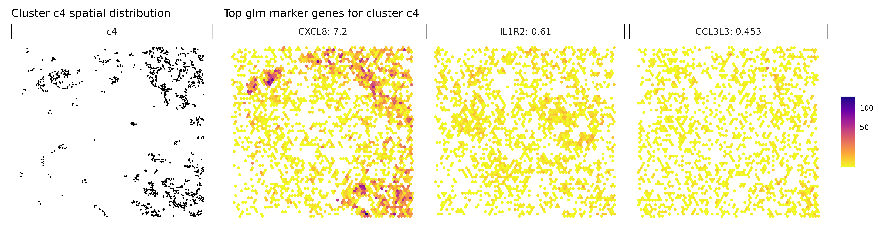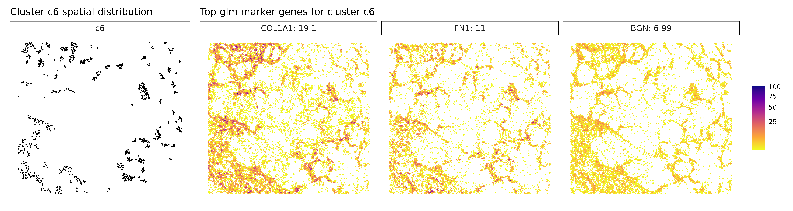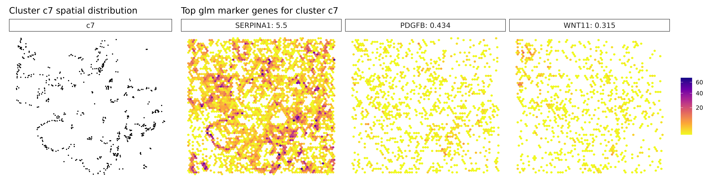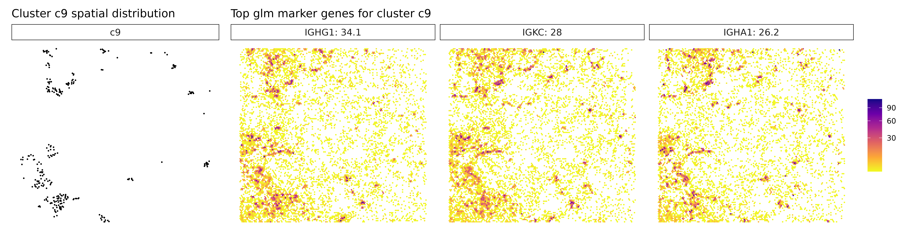
Comparison with Traditional Methods: FindMarkers
Let’s compare jazzPanda results with traditional differential expression analysis using Seurat’s FindMarkers function.
# Convert to Seurat object for FindMarkers analysis)
r1_seu <- as.Seurat(r1_sub_se, data = NULL)
# Set cluster identities
r1_seu$cluster = factor(r1_seu$cluster, levels = cluster_names)
Idents(r1_seu) = r1_seu$cluster
# Perform FindMarkers analysis
# This is the traditional approach that ignores spatial information
markers_fm <- FindAllMarkers(
r1_seu,
only.pos = TRUE, # Only positive markers
logfc.threshold = 0 # No minimum fold change threshold
)
# Organize results
markers_fm$cluster = factor(markers_fm$cluster, levels = cluster_names)
markers_fm = markers_fm[order(markers_fm$cluster,
markers_fm$p_val_adj, -markers_fm$avg_log2FC), ]
# Get top markers for each cluster
split_markers <- split(markers_fm, markers_fm$cluster)
top3_markers <- do.call(rbind, lapply(split_markers, function(df) {
df[order(df$p_val_adj, -df$avg_log2FC), ][1:5, ]
}))
# Create dot plots for comparison
p1<-DotPlot(r1_seu, features = unique(top3_markers$gene)) +
scale_colour_gradient(low = "white", high = "red") +
coord_flip() +
theme_minimal(base_size = 8) + # Slightly smaller base font
theme(
plot.margin = margin(5, 10, 5, 5), # Trim whitespace (top, right, bottom, left)
axis.text.x = element_text( hjust = 0.5, vjust = 1, size = 7),
axis.text.y = element_text(size = 7),
panel.grid = element_blank(),
axis.title = element_blank(),
legend.position = "right",
legend.key.size = unit(0.3, "cm"),
legend.text = element_text(size = 6),
plot.title = element_text(hjust = 0.5, face = "bold", size = 9, margin = margin(b = 6))
) +
labs(title = "Top 5 marker genes by FindMarkers", x = "", y = "")
# Prepare jazzPanda-correlation results for comparison
top3_perm_lst <- lapply(cluster_names, function(cluster) {
pvals <- perm_res[, cluster]
corrs <- obs_corr[, cluster]
# Combine and sort
df <- data.frame(
gene = rownames(perm_res),
pval = pvals,
corr = corrs
)
df <- df[!is.na(df$pval), ] # remove NA
df <- df[order(df$pval, -abs(df$corr)), ] # first by pval, then by abs(corr)
head(df$gene, 3)
})
names(top3_perm_lst) <- colnames(perm_res)
top3_perm <- unique(unlist(top3_perm_lst))
p2<-DotPlot(r1_seu, features = unique(top3_perm)) +
scale_colour_gradient(low = "white", high = "red") +
coord_flip() +
theme_minimal(base_size = 8) + # Slightly smaller base font
theme(
plot.margin = margin(5, 10, 5, 5), # Trim whitespace (top, right, bottom, left)
axis.text.x = element_text( hjust = 0.5, vjust = 1, size = 7),
axis.text.y = element_text(size = 7),
panel.grid = element_blank(),
axis.title = element_blank(),
legend.position = "right",
legend.key.size = unit(0.3, "cm"),
legend.text = element_text(size = 6),
plot.title = element_text(hjust = 0.5, face = "bold", size = 9, margin = margin(b = 6))
) +
labs(title = "Top 3 marker genes by jazzPanda-correlation", x = "", y = "")
# Prepare jazzPanda results for comparison
jazzPanda_top_r1 = r1_top[r1_top$top_cluster != "NoSig", ]
jazzPanda_top_r1$top_cluster = factor(jazzPanda_top_r1$top_cluster, levels = cluster_names)
top3_jazzPanda <- jazzPanda_top_r1 %>%
group_by(top_cluster) %>%
slice_max(order_by = glm_coef, n = 3, with_ties = FALSE)
p3<-DotPlot(r1_seu, features = unique(top3_jazzPanda$gene)) +
scale_colour_gradient(low = "white", high = "red") +
coord_flip() +
theme_minimal(base_size = 8) + # Slightly smaller base font
theme(
plot.margin = margin(5, 10, 5, 5), # Trim whitespace (top, right, bottom, left)
axis.text.x = element_text(angle = 0, hjust = 0.5, vjust = 1, size = 7),
axis.text.y = element_text(size = 7),
panel.grid = element_blank(),
axis.title = element_blank(),
legend.position = "right",
legend.key.size = unit(0.3, "cm"),
legend.text = element_text(size = 6),
plot.title = element_text(hjust = 0.5, face = "bold", size = 9, margin = margin(b = 6))
) +
labs(title = "Top 3 marker genes by jazzPanda-glm", x = "", y = "")
p1 | p2 | p3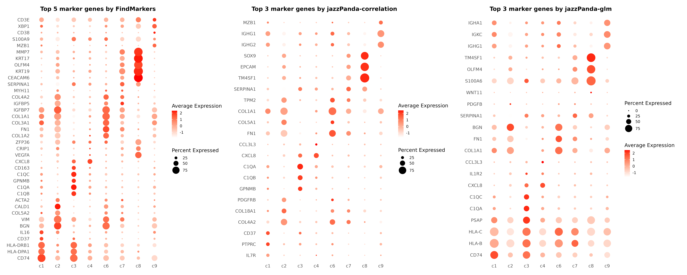
plt_lst = list()
for (cl in cluster_names){
findM_sig =markers_fm[markers_fm$cluster==cl,"gene"]
lasso_cl=r1_top[r1_top$top_cluster==cl, "gene"]
obs_cutoff = 0.5
perm_cl=intersect(row.names(perm_res[perm_res[,cl]<0.05,]),
row.names(obs_corr[obs_corr[, cl]>obs_cutoff,]))
df_mt =as.data.frame(matrix(FALSE,nrow=nrow(r1_top),ncol=3))
row.names(df_mt) =r1_top$gene
colnames(df_mt)=c("jazzPanda-glm", "jazzPanda-correlation",
"Wilcoxon Rank Sum Test")
df_mt[findM_sig,"Wilcoxon Rank Sum Test"] = TRUE
df_mt[lasso_cl,"jazzPanda-glm"] = TRUE
df_mt[perm_cl,"jazzPanda-correlation"] = TRUE
df_mt$gene_name =row.names(df_mt)
p<-upset(df_mt,
intersect=c("Wilcoxon Rank Sum Test", "jazzPanda-correlation","jazzPanda-glm"),
wrap=TRUE, keep_empty_groups= TRUE, name="",
themes=theme_grey(),
stripes=upset_stripes(geom=geom_segment(size=5),colors=c('grey95', 'grey95', 'grey95')),
sort_intersections_by ="cardinality", sort_sets= FALSE,min_degree=1,
set_sizes=FALSE,
sort_intersections= "descending", warn_when_converting=FALSE,
warn_when_dropping_groups=TRUE,encode_sets=TRUE,
matrix=(intersection_matrix()+
theme(axis.text.x=element_blank(),
panel.background = element_rect(fill="NA"),
axis.ticks = element_blank(),
axis.title = element_blank())),
base_annotations=list('Intersection size'=(intersection_size(bar_number_threshold=1,color='grey9',fill='grey80')+
scale_y_continuous(expand = expansion(mult = c(0, 0.15)))+
theme(axis.text.x = element_blank(),axis.title.x = element_blank(),
panel.background = element_rect(fill="NA"),
#plot.margin = margin(t = 10, r = 5, b = 5, l = 5),
panel.grid = element_line(color="grey90"),
axis.ticks.x = element_blank()))),
width_ratio=0.5, height_ratio=1/4)+
ggtitle(paste(cl,"cells"))
plt_lst[[cl]] = p
}
combined_plot <- wrap_plots(plt_lst, ncol = 2)
combined_plot 
Multi-Sample Analysis
Prepare Multi-Sample Data
When multiple replicates are available, jazzPanda can leverage this information to identify more robust marker genes.
# Combine cell information from both replicates
cluster_info <- as.data.frame(rbind(r1_cells, r3_cells))
# Visualize spatial distribution across samples
ggplot(data = cluster_info, aes(x = x, y = y, colour = cluster)) +
geom_point(size = 0.3) +
scale_colour_brewer(palette = "Dark2") +
facet_wrap(~sample, ncol = 2, scales = "free") +
guides(colour = guide_legend(override.aes = list(shape = 15, size = 5))) +
labs(title = "Spatial Distribution by Sample and Cluster")+
theme_classic()Multi-Sample Spatial Vector Analysis
# Prepare transcript data for multi-sample analysis
r3_tx$feature_name <- r3_tx$gene
# Generate spatial vectors for multiple samples
multi_sample_sv <- get_vectors(
x = list(Lung5_Rep1 = r1_tx, Lung5_Rep3 = r3_tx),
sample_names = c("Lung5_Rep1", "Lung5_Rep3"),
cluster_info = cluster_info,
bin_type = "square",
bin_param = c(grid_length, grid_length),
test_genes = genes
)
# Prepare negative control data for multi-sample analysis
r3_nc_tx <- r3_tx[r3_tx$gene %in% nc_names, ]
multi_sample_nc <- create_genesets(
x = list(Lung5_Rep1 = r1_nc_tx, Lung5_Rep3 = r3_nc_tx),
sample_names = c("Lung5_Rep1", "Lung5_Rep3"),
name_lst = list(probe = nc_names),
bin_type = "square",
bin_param = c(grid_length, grid_length),
cluster_info = NULL
)
cat("Multi-sample spatial vectors created.\n",
"Gene matrix dimensions:", dim(multi_sample_sv$gene_mt), "\n",
"Cluster matrix dimensions:", dim(multi_sample_sv$cluster_mt), "\n")## Multi-sample spatial vectors created.
## Gene matrix dimensions: 800 960
## Cluster matrix dimensions: 800 10Multi-Sample Linear modelling
# Set seed for reproducible results
set.seed(seed_number)
# Perform multi-sample lienar modelling
multi_sample_lasso <- lasso_markers(gene_mt = multi_sample_sv$gene_mt,
cluster_mt = multi_sample_sv$cluster_mt,
sample_names = c("Lung5_Rep1", "Lung5_Rep3"),
keep_positive = TRUE,
background = multi_sample_nc)
# Extract top results
multi_sample_top <- get_top_mg(multi_sample_lasso, coef_cutoff = 0.1)
# Extract full results
multi_sample_full <- get_full_mg(multi_sample_lasso)Examine Results
# Display top results
head(multi_sample_top[multi_sample_top$top_cluster=="c8", ],10)## gene top_cluster glm_coef pearson max_gg_corr max_gc_corr
## IER3 IER3 c8 5.5968550 0.8485080 0.9257596 0.8485080
## MIF MIF c8 5.3192798 0.8296015 0.9453560 0.8296015
## KLF2 KLF2 c8 1.4376418 0.7046917 0.8351666 0.7672940
## ADGRG6 ADGRG6 c8 0.2773574 0.7357393 0.8242252 0.7357393
## EPHA2 EPHA2 c8 2.5458139 0.8280689 0.9457961 0.8280689
## LGALS3 LGALS3 c8 1.8637312 0.7914608 0.8722060 0.7914608
## TACSTD2 TACSTD2 c8 1.8534981 0.7921800 0.9354685 0.7921800
## IRF3 IRF3 c8 1.3820246 0.6942337 0.8884235 0.7777010
## PSCA PSCA c8 1.1857986 0.7515971 0.8334523 0.7515971
## SERPINB5 SERPINB5 c8 0.7764836 0.8193537 0.9240545 0.8193537
for (cl in cluster_names) {
# Subset to top genes for this cluster
cluster_genes <- multi_sample_top[multi_sample_top$top_cluster == cl, ]
if (nrow(cluster_genes) == 0) {
cat("\n=== Cluster:", cl, "===\n",
" No marker genes found.\n")
next
}
# Ensure numeric types
cluster_genes$glm_coef <- as.numeric(cluster_genes$glm_coef)
cluster_genes$pearson <- as.numeric(cluster_genes$pearson)
# Sort by glm_coef
cluster_genes <- cluster_genes[order(cluster_genes$glm_coef, decreasing = TRUE), ]
# Take top 3 genes
top_genes <- head(cluster_genes, 3)
# Print nicely formatted output
cat("\n=== Cluster:", cl, "===\n")
for (i in 1:nrow(top_genes)) {
gene <- top_genes$gene[i]
coef <- signif(top_genes$glm_coef[i], 3)
corr <- signif(top_genes$pearson[i], 3)
cat(sprintf(" %d. %-10s | glm_coef: %-6s | corr: %-6s\n", i, gene, coef, corr))
}
}##
## === Cluster: c1 ===
## 1. MALAT1 | glm_coef: 26.9 | corr: 0.418
## 2. CD74 | glm_coef: 18.4 | corr: 0.718
## 3. HLA-B | glm_coef: 14.6 | corr: 0.718
##
## === Cluster: c2 ===
## 1. COL12A1 | glm_coef: 1.67 | corr: 0.334
##
## === Cluster: c3 ===
## 1. PSAP | glm_coef: 11.4 | corr: 0.604
## 2. C1QA | glm_coef: 5.07 | corr: 0.771
## 3. GPNMB | glm_coef: 4.24 | corr: 0.8
##
## === Cluster: c4 ===
## 1. CXCL8 | glm_coef: 7.28 | corr: 0.729
## 2. IL1R2 | glm_coef: 0.546 | corr: 0.274
## 3. S100A8 | glm_coef: 0.308 | corr: 0.428
##
## === Cluster: c6 ===
## 1. COL1A1 | glm_coef: 15.3 | corr: 0.622
## 2. FN1 | glm_coef: 9.29 | corr: 0.657
## 3. IGFBP7 | glm_coef: 8.7 | corr: 0.59
##
## === Cluster: c7 ===
## No marker genes found.
##
## === Cluster: c8 ===
## 1. S100A6 | glm_coef: 31.6 | corr: 0.87
## 2. KRT19 | glm_coef: 27 | corr: 0.875
## 3. OLFM4 | glm_coef: 20.5 | corr: 0.766
##
## === Cluster: c9 ===
## 1. IGHG1 | glm_coef: 37 | corr: 0.672
## 2. IGKC | glm_coef: 30.1 | corr: 0.592
## 3. IGHA1 | glm_coef: 27.9 | corr: 0.543
# Display full results
multi_sample_full[multi_sample_full$gene=="EPCAM", ]## gene cluster glm_coef p_value pearson max_gg_corr max_gc_corr
## 1018 EPCAM c8 5.6240710 2.622303e-169 0.8929489 0.9673136 0.8929489
## 1019 EPCAM probe 0.7620053 9.618965e-43 0.6699822 0.9673136 0.8929489
## 1020 EPCAM c7 1.8136254 5.874387e-08 0.2709481 0.9673136 0.8929489
## 1021 EPCAM c2 3.6518637 3.942608e-02 0.1161284 0.9673136 0.8929489
multi_sample_full[multi_sample_full$gene=="MZB1", ]## gene cluster glm_coef p_value pearson max_gg_corr max_gc_corr
## 2149 MZB1 c9 3.0269883 3.290238e-91 0.6310573 0.868089 0.6310573
## 2150 MZB1 probe 0.1528683 2.075327e-17 0.3016143 0.868089 0.6310573
## 2151 MZB1 c1 0.3269219 4.336683e-11 0.2924043 0.868089 0.6310573
## 2152 MZB1 c6 0.3129745 1.470690e-06 0.2600129 0.868089 0.6310573Cluster c1 is characterized by MALAT1, CD74, and HLA-B, suggesting a lymphoid or antigen-presenting cell population. CD74 and HLA-B are involved in MHC class II presentation, while MALAT1 is a long non-coding RNA often expressed in immune cells and implicated in T cell activation or regulation. Cluster c2, marked by COL12A1, likely represents a stromal subset, possibly fibroblasts or ECM-producing cells, consistent with its role in collagen cross-linking and matrix organization.
Cluster c3 shows clear expression of PSAP, C1QA, and GPNMB, aligning with a macrophage or monocyte-derived population. These genes are commonly found in tissue-resident or tumor-associated macrophages, particularly those involved in phagocytosis and immune modulation. Cluster c4 expresses pro-inflammatory markers CXCL8, IL1R2, and S100A8, suggesting a myeloid-derived population actively participating in inflammation or chemotaxis. Cluster c6, with high levels of COL1A1, FN1, and IGFBP7, reflects a classic fibroblast-like phenotype, potentially representing cancer-associated fibroblasts (CAFs) involved in extracellular matrix remodeling and paracrine signaling.
Cluster c7 did not yield identifiable marker genes under current thresholds, which could indicate a more transcriptionally quiescent population or a mixed/ambiguous identity. Cluster c8 expresses epithelial and tumor-associated markers including S100A6, KRT19, and OLFM4, suggesting it corresponds to a tumor epithelial compartment, possibly with proliferative or stem-like features. Lastly, cluster c9 is defined by immunoglobulin genes IGHG1, IGKC, and IGHA1, indicative of plasma cells or antibody-secreting plasmablasts, pointing to active humoral immune engagement within the tumor microenvironment.
Visualize Multi-Sample Results
# ============================================================================
# SPATIAL VISUALIZATION OF TOP MARKER GENES
# ============================================================================
# - Left panel: Spatial distribution of the target cluster
# - Right panels: Spatial expression patterns of top marker genes
# - Color intensity: Transcript density (darker = more transcripts)
# - Hexagonal bins: Smooth spatial representation of expression
# ============================================================================
for (cl in cluster_names) {
# Get top genes for this cluster
inters <- multi_sample_top[multi_sample_top$top_cluster == cl, "gene"]
if (length(inters) > 0) {
# Get coefficient values
rounded_val <- signif(as.numeric(multi_sample_top[inters, "glm_coef"]), digits = 3)
inters_df <- as.data.frame(cbind(gene = inters, value = rounded_val))
inters_df$value <- as.numeric(inters_df$value)
inters_df <- inters_df[order(inters_df$value, decreasing = TRUE), ]
inters_df$text <- paste(inters_df$gene, inters_df$value, sep = ": ")
# Select top 3 genes
inters_df <- inters_df[1:min(3, nrow(inters_df)), ]
inters <- inters_df$gene
# Prepare data for Lung5_Rep1
iters_rep1 <- r1_tx$feature_name %in% inters
vis_r1 <- r1_tx[iters_rep1, c("x", "y", "feature_name")]
vis_r1$value <- inters_df[match(vis_r1$feature_name, inters_df$gene), "value"]
vis_r1$text_label <- paste(vis_r1$feature_name, vis_r1$value, sep = ": ")
vis_r1$text_label <- factor(vis_r1$text_label)
vis_r1$sample <- "Lung5_Rep1"
# Prepare data for Lung5_Rep3
iters_rep3 <- r3_tx$feature_name %in% inters
vis_r3 <- r3_tx[iters_rep3, c("x", "y", "feature_name")]
vis_r3$value <- inters_df[match(vis_r3$feature_name, inters_df$gene), "value"]
vis_r3$text_label <- paste(vis_r3$feature_name, vis_r3$value, sep = ": ")
vis_r3$text_label <- factor(vis_r3$text_label)
vis_r3$sample <- "Lung5_Rep3"
# Create plots for each sample
p1 <- ggplot(data = vis_r1, aes(x = x, y = y)) +
geom_hex(bins = auto_hex_bin(nrow(vis_r1))) +
facet_wrap(~text_label) +
scale_fill_viridis_c(option = "plasma", trans = "sqrt", direction = -1) +
guides(fill = guide_colorbar(height = grid::unit(5, "cm"))) +
defined_theme +
theme(legend.position = "right", legend.title = element_blank())
p2 <- ggplot(data = vis_r3, aes(x = x, y = y)) +
geom_hex(bins = auto_hex_bin(nrow(vis_r3))) +
facet_wrap(~text_label) +
scale_fill_viridis_c(option = "plasma", trans = "sqrt", direction = -1) +
guides(fill = guide_colorbar(height = grid::unit(5, "cm"))) +
defined_theme +
theme(legend.position = "right", legend.title = element_blank())
# Create cluster plot
cl_pt <- ggplot(data = cluster_info[cluster_info$cluster == cl, ],
aes(x = x, y = y, color = cluster)) +
geom_point(size = 0.1) +
facet_wrap(~sample, ncol = 1, scales = "free") +
scale_color_manual(values = "black") +
defined_theme +
labs(title = paste("Cluster", cl, "spatial distribution"))
# Combine plots
stacked_panel = (p1 / p2)
# Add empty panels if fewer than 3 features to keep layout consistent
if (length(inters) == 2) {
stacked_panel <- (stacked_panel | plot_spacer()) +
plot_layout(widths = c(2, 1))
} else if (length(inters) == 1) {
stacked_panel <- (stacked_panel | plot_spacer() | plot_spacer()) +
plot_layout(widths = c(1, 1, 1))
}
lyt <- wrap_plots(cl_pt, ncol = 1) | stacked_panel
layout_design <- lyt + patchwork::plot_layout(widths = c(1, 3))
print(layout_design)
}
}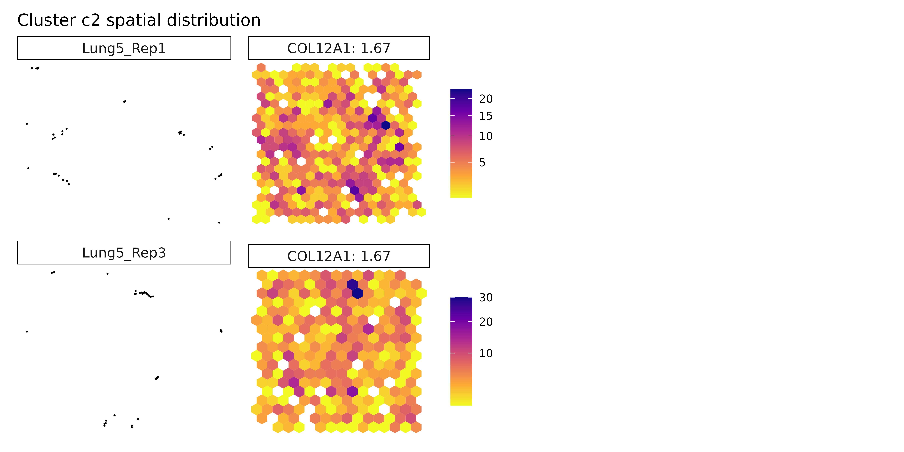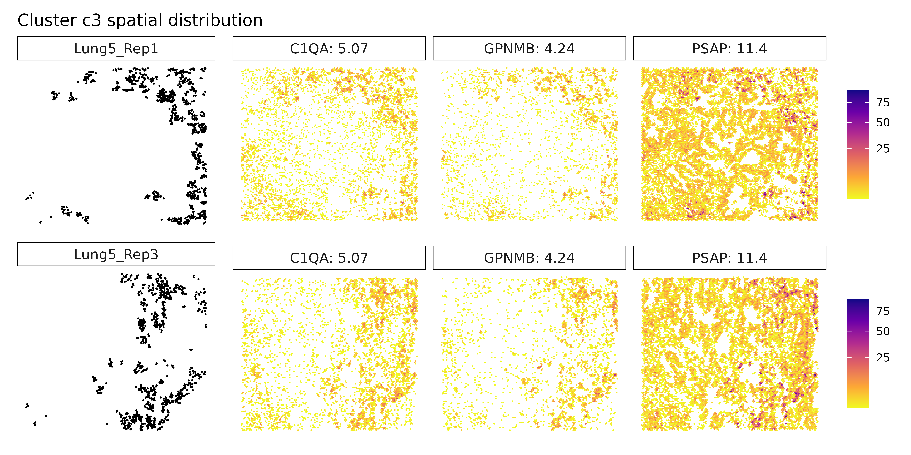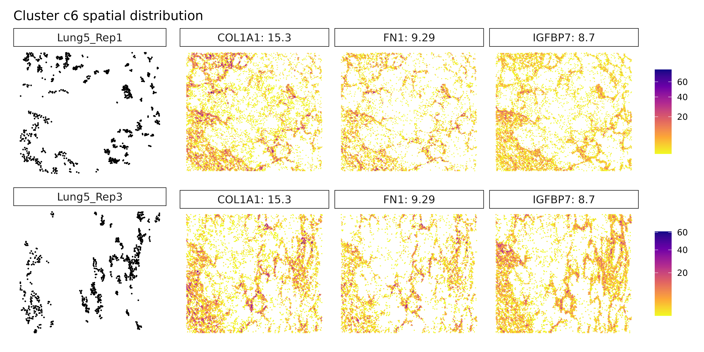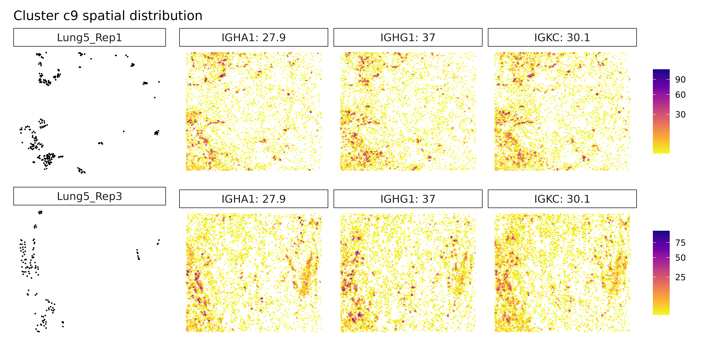
Summary and Conclusions
This workshop showcased how jazzPanda can be used to detect spatially-informed marker genes in spatial transcriptomics data, complementing standard tools like FindMarkers.
-
FindMarkers: Identifies differentially expressed
genes between clusters, but does not consider spatial layout.
- jazzPanda: Detects genes with expression patterns that align with spatial structures and cluster boundaries.
Key Points
Spatial resolution
jazzPanda highlights genes with spatial expression patterns, revealing insights into tissue organization that standard non-spatial methods may miss.-
Two analysis modes
- The correlation approach is designed for
single-sample analysis, identifying genes spatially
correlated with clusters.
- The linear modeling approach supports multi-sample analysis, allowing detection of both robust shared markers and sample-specific genes.
- The correlation approach is designed for
single-sample analysis, identifying genes spatially
correlated with clusters.
Background correction
Incorporating negative control probes improves marker specificity by reducing background noise.Robustness across replicates
The linear modeling framework in jazzPanda enables consistent detection of spatial markers across biological replicates.
While many tools are available for marker gene detection, jazzPanda stands out by incorporating spatial context, offering deeper biological insight and improving the robustness of marker identification in complex tissue structures.
## R version 4.5.1 (2025-06-13)
## Platform: x86_64-pc-linux-gnu
## Running under: Ubuntu 24.04.2 LTS
##
## Matrix products: default
## BLAS: /usr/lib/x86_64-linux-gnu/openblas-pthread/libblas.so.3
## LAPACK: /usr/lib/x86_64-linux-gnu/openblas-pthread/libopenblasp-r0.3.26.so; LAPACK version 3.12.0
##
## locale:
## [1] LC_CTYPE=C.UTF-8 LC_NUMERIC=C LC_TIME=C.UTF-8
## [4] LC_COLLATE=C.UTF-8 LC_MONETARY=C.UTF-8 LC_MESSAGES=C.UTF-8
## [7] LC_PAPER=C.UTF-8 LC_NAME=C LC_ADDRESS=C
## [10] LC_TELEPHONE=C LC_MEASUREMENT=C.UTF-8 LC_IDENTIFICATION=C
##
## time zone: UTC
## tzcode source: system (glibc)
##
## attached base packages:
## [1] stats4 stats graphics grDevices utils datasets methods
## [8] base
##
## other attached packages:
## [1] ComplexUpset_1.3.3 dplyr_1.1.4
## [3] Seurat_5.3.0 SeuratObject_5.1.0
## [5] sp_2.2-0 pheatmap_1.0.13
## [7] jazzPanda_1.0.1 CosMxSpatialAnalysisWorkshop_1.0.0
## [9] corrplot_0.95 SpatialExperiment_1.18.1
## [11] SingleCellExperiment_1.30.1 SummarizedExperiment_1.38.1
## [13] Biobase_2.68.0 GenomicRanges_1.60.0
## [15] GenomeInfoDb_1.44.1 IRanges_2.42.0
## [17] S4Vectors_0.46.0 BiocGenerics_0.54.0
## [19] generics_0.1.4 MatrixGenerics_1.20.0
## [21] matrixStats_1.5.0 patchwork_1.3.1
## [23] ggplot2_3.5.2
##
## loaded via a namespace (and not attached):
## [1] RcppAnnoy_0.0.22 splines_4.5.1 later_1.4.2
## [4] tibble_3.3.0 polyclip_1.10-7 hardhat_1.4.1
## [7] pROC_1.19.0.1 rpart_4.1.24 fastDummies_1.7.5
## [10] lifecycle_1.0.4 doParallel_1.0.17 globals_0.18.0
## [13] lattice_0.22-7 MASS_7.3-65 magrittr_2.0.3
## [16] limma_3.64.3 plotly_4.11.0 sass_0.4.10
## [19] rmarkdown_2.29 jquerylib_0.1.4 yaml_2.3.10
## [22] httpuv_1.6.16 sctransform_0.4.2 spam_2.11-1
## [25] spatstat.sparse_3.1-0 reticulate_1.43.0 cowplot_1.2.0
## [28] pbapply_1.7-4 RColorBrewer_1.1-3 lubridate_1.9.4
## [31] abind_1.4-8 Rtsne_0.17 purrr_1.1.0
## [34] BumpyMatrix_1.16.0 nnet_7.3-20 ipred_0.9-15
## [37] lava_1.8.1 GenomeInfoDbData_1.2.14 ggrepel_0.9.6
## [40] irlba_2.3.5.1 listenv_0.9.1 spatstat.utils_3.1-5
## [43] goftest_1.2-3 RSpectra_0.16-2 spatstat.random_3.4-1
## [46] fitdistrplus_1.2-4 parallelly_1.45.1 pkgdown_2.1.3
## [49] codetools_0.2-20 DelayedArray_0.34.1 prettydoc_0.4.1
## [52] tidyselect_1.2.1 shape_1.4.6.1 UCSC.utils_1.4.0
## [55] farver_2.1.2 spatstat.explore_3.5-2 jsonlite_2.0.0
## [58] caret_7.0-1 progressr_0.15.1 ggridges_0.5.6
## [61] survival_3.8-3 iterators_1.0.14 systemfonts_1.2.3
## [64] foreach_1.5.2 tools_4.5.1 ragg_1.4.0
## [67] ica_1.0-3 Rcpp_1.1.0 glue_1.8.0
## [70] prodlim_2025.04.28 gridExtra_2.3 SparseArray_1.8.1
## [73] xfun_0.52 withr_3.0.2 fastmap_1.2.0
## [76] digest_0.6.37 timechange_0.3.0 R6_2.6.1
## [79] mime_0.13 colorspace_2.1-1 textshaping_1.0.1
## [82] scattermore_1.2 tensor_1.5.1 spatstat.data_3.1-6
## [85] hexbin_1.28.5 tidyr_1.3.1 data.table_1.17.8
## [88] recipes_1.3.1 class_7.3-23 httr_1.4.7
## [91] htmlwidgets_1.6.4 S4Arrays_1.8.1 uwot_0.2.3
## [94] ModelMetrics_1.2.2.2 pkgconfig_2.0.3 gtable_0.3.6
## [97] timeDate_4041.110 lmtest_0.9-40 XVector_0.48.0
## [100] htmltools_0.5.8.1 dotCall64_1.2 scales_1.4.0
## [103] png_0.1-8 gower_1.0.2 spatstat.univar_3.1-4
## [106] knitr_1.50 reshape2_1.4.4 rjson_0.2.23
## [109] nlme_3.1-168 cachem_1.1.0 zoo_1.8-14
## [112] stringr_1.5.1 KernSmooth_2.23-26 parallel_4.5.1
## [115] miniUI_0.1.2 desc_1.4.3 pillar_1.11.0
## [118] grid_4.5.1 vctrs_0.6.5 RANN_2.6.2
## [121] promises_1.3.3 xtable_1.8-4 cluster_2.1.8.1
## [124] evaluate_1.0.4 magick_2.8.7 cli_3.6.5
## [127] compiler_4.5.1 rlang_1.1.6 crayon_1.5.3
## [130] future.apply_1.20.0 labeling_0.4.3 plyr_1.8.9
## [133] fs_1.6.6 stringi_1.8.7 viridisLite_0.4.2
## [136] deldir_2.0-4 BiocParallel_1.42.1 lazyeval_0.2.2
## [139] spatstat.geom_3.5-0 glmnet_4.1-10 Matrix_1.7-3
## [142] RcppHNSW_0.6.0 future_1.67.0 statmod_1.5.0
## [145] shiny_1.11.1 ROCR_1.0-11 igraph_2.1.4
## [148] bslib_0.9.0